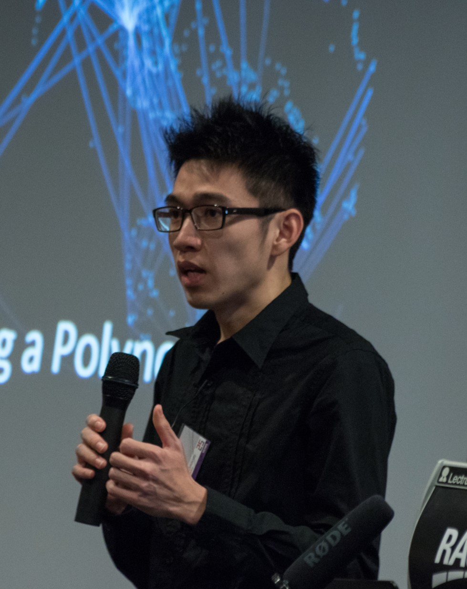

PhD (Monash University)
Thesis: Tutte-Whitney Polynomials for Directed Graphs and Maps
Advisors: Graham Farr and Kerri Morgan
MSc (Universiti Putra Malaysia)
Thesis: Integral Solutions to the Equation x2 + 2a · 7b = yn
Advisors: Siti Hasana Sapar and Kamel Ariffin Mohd Atan
BSc (Hons) (Universiti Putra Malaysia)
2019–Present: Senior Lecturer, Universiti Putra Malaysia, Malaysia
2022–2024: Singapore Academies Southeast Asia Fellow, Nanyang Technological University, Singapore
2015–2018: Teaching Associate, Monash University (Clayton Campus), Australia
2013–2014: Lecturer, Tunku Abdul Rahman University College, Malaysia
2011–2013: Senior Executive, Public Bank Berhad, Malaysia